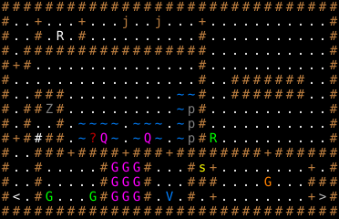

幽霊屋敷 / Haunted House
固定クエスト「幽霊屋敷」の達成条件・報酬・地形・出現モンスター・クエストメッセージ。
Fixed quest "Haunted House": objective, reward, terrain, monsters and messages.
← クエスト一覧 / All quests · 🏠 ホーム / Home
概要 / Overview
| 項目 | 内容 |
|---|---|
| 受注箇所 | 辺境の町（アウトポスト）（BUILDING_1） |
| 種別 | 全滅 |
| 対象Lv（危険度） | 48 |
| 目標 | エリア内の全モンスターを撃破 |
| 前提クエスト | 18: 湖の洞窟 |
| 報酬 | テレパシーのアミュレット |
| フラグ | PRESET / ONCE |
達成条件 / Objective
クエストフロアに出現する 全モンスターを撃破 すると達成。
報酬 / Reward
達成後、依頼建物の前に出現する。
- テレパシーのアミュレット
クエストメッセージ / Messages
依頼時
街の城壁の南西の角にある、古い草吹きの家で何か悪いことが起こっています。
その家は呪われていて、人々を近寄せないといわれています。
我々はその家に住み着いている悪霊を退治してくれる人を探しています。
達成（報酬）時
本当に良くやってくれました！我々住民はようやく安心することが出来ます。
お礼として、邪悪な者どもを更に効果的に感知することができるアイテムを
差し上げます。
失敗時
あぁ、何てザマでしょう！
幸運にも、この街を通りがかったたくさんの巡礼者たちは
聖なる街への巡礼の途中である、超エリートパラディンであることが
分かりました。そして彼らは修行の一環として、屋敷の亡霊どもを
追い払ってくださいました。彼らは報酬について尋ねさえしません
でしたよ。あなたも彼らを見つけて爪のアカでも煎じて飲ませて
もらってはいかがですか？
出現モンスター / Monsters
| 記号 | 表示 | モンスター | 体数 |
|---|---|---|---|
S |
G（Violet） | シャドウ・デーモン / Shadow demon | 9 |
I |
p（Dark Gray） | イプシシマス / Ipsissimus | 3 |
m |
j（Brown） | 死体の塊 / Undead mass | 2 |
Q |
Q（Violet） | ネクサス・クイルスルグ / Nexus quylthulg | 2 |
C |
G（Light Green） | スペクター / Spectre | 2 |
> |
>（Light Gray） | 地獄への階段 / Stairway to hell | 1 |
t |
R（White） | 骸骨ティラノサウルス / Skeletal tyrannosaurus | 1 |
? |
?（Red） | ラアルの破壊集大成 / Raal's Tome of Destruction | 1 |
V |
V（Blue） | バンパイア・ロード / Vampire lord | 1 |
G |
G（Orange） | ドリードマスター / Dreadmaster | 1 |
T |
R（Light Green） | 幽体ティラノサウルス / Spectral tyrannosaurus | 1 |
Z |
Z（Gray） | ティンダロスの猟犬 / Hound of Tindalos | 1 |
j |
s（Yellow） | 手のドルジ / Hand druj | 1 |
地形・マップ / Map
初期位置と固定配置。記号の意味は下の凡例を参照。

ASCIIマップ
XXXXXXXXXXXXXXXXXXXXXXXXXXXXXXX
X..D!..D^^^m^^m^^^D...........X
X..X.t.X^^^^^^^^^^X...........X
X!XXXXXXXXXXXXXXXXX...........X
XDX...............X.!!!!!!!!!.X
X.................X.!XXXXXXX!.X
X..XXX..........==X.!XXXXXXX!.X
X.XXZX..........=IX.!!!!!!!!!.X
X.XssX.====.===.=IX...........X
XDX#XX.=?Q=.=Q=.=IXT..........X
X..XXXDXXXXDXXXDXXXXXXXXDXXXXXX
X..X^....XSSSX...XjD^^^^^^^^D!X
X..X..!..XSSSX.!.XXX^...G..^XXX
X<.XC...CXSSSX.V.X!D^^^^^^^^D>X
XXXXXXXXXXXXXXXXXXXXXXXXXXXXXXX
地形の凡例
| 記号 | 表示 | 地形 / 内容 |
|---|---|---|
X |
#（Light Brown） | 永久岩の壁 |
. |
.（White） | 床 |
D |
+（Light Brown） | ドア |
! |
.（White） | 床（ランダムアイテム） |
^ |
.（White） | 床 |
= |
~（Blue） | 深い水 |
s |
.（White） | 床 |
# |
#（White） | 花崗岩の壁 |
< |
<（White） | 上り階段 |
🤖 この解説ページは
tools/generate-wiki.mjsにより生成されています（出典:lib/edit/quests/*.txt,lib/edit/QuestPreferences.txt）。手動で編集しないでください — 変更は次回の再生成で上書きされます。内容の修正は生成スクリプトを編集してください。 生成 / Generated: 2026-07-05 07:53 UTC · hengband5ebae9734b·tools/generate-wiki.mjs